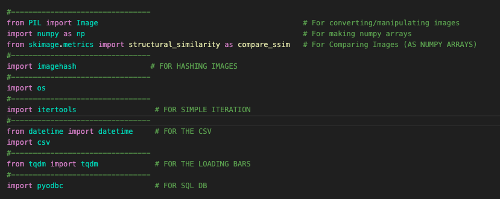
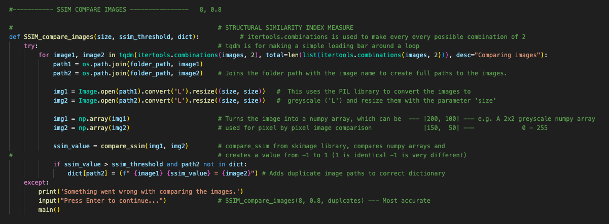
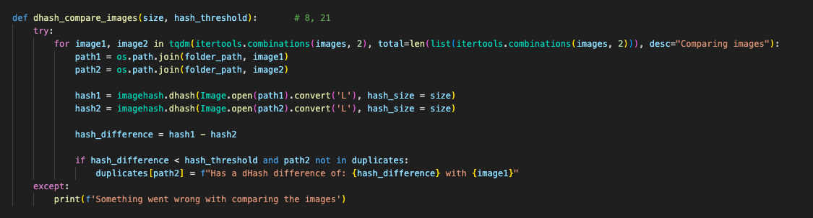

This is an application to remove duplicate images. It can also find similar images, store the results, and display the images in a html file before deleting.
Imports:

This is the function to compare and seperate images using SSIM (Structural Similarity Index Measure).

This is a function to comapre and sperate images using dhash (Difference Hash)
